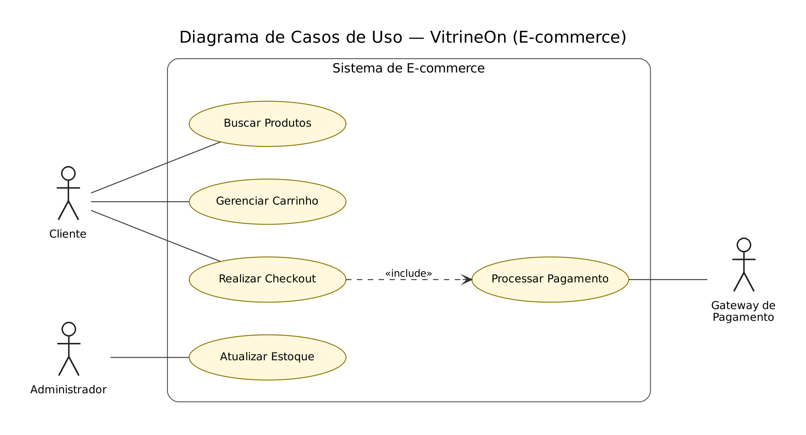
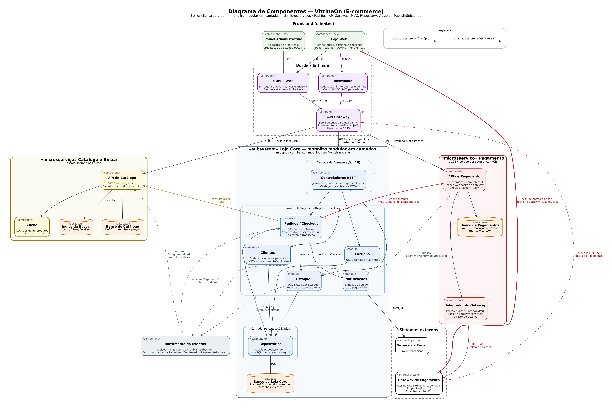
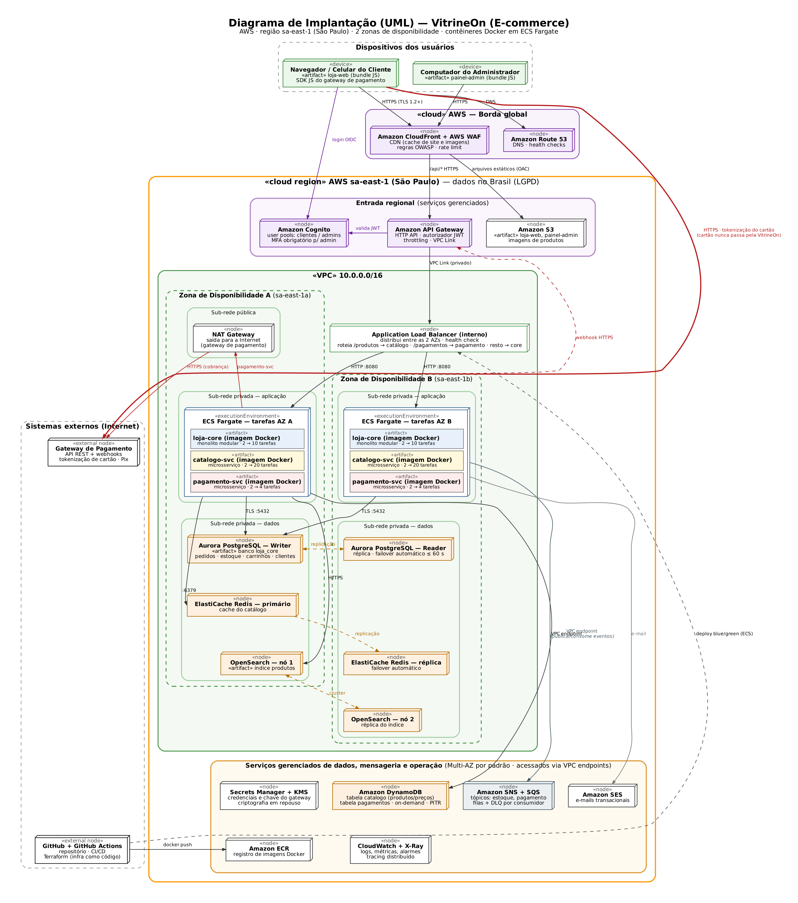

Projeto Final · Arquitetura de Software
Uma loja virtual que aguenta a Black Friday
e protege o cartão do cliente
Lucas Borges Krziminski
de tráfego na Black Friday e no Natal. Fora do ar = venda perdida.
e dados pessoais. Um vazamento custa a credencial PCI e multa da LGPD.
produtos. 95% dos acessos são buscas e navegação.
E a regra que não pode falhar: estoque e pagamento precisam bater. Nada de vender o que não existe nem cobrar duas vezes.
2
| Restrição | O que isso nos obriga a fazer |
|---|---|
| Equipe de 6 pessoas, MVP em 6 meses | Poucos deploys, serviços gerenciados, nada de Kubernetes |
| Orçamento limitado (~US$ 3 mil/mês) | Pagar por uso; escalar só no pico |
| Picos de 10× | A busca precisa escalar sozinha |
| PCI-DSS e LGPD | Cartão nunca passa por nós; dados no Brasil |
| Gateway de terceiros | Poder trocar de gateway sem reescrever o checkout |
Depois: 4º Manutenibilidade · 5º Usabilidade · 6º Portabilidade. Se Segurança e Disponibilidade brigarem, Segurança vence.
5| Monolito puro | Microsserviços completos | Monolito modular + 2 microsserviços ✔ | |
|---|---|---|---|
| Segurança | Pagamento junto de tudo | Bom isolamento | Pagamento isolado |
| Consistência | Simples | Difícil (sagas) | Estoque + pedido numa transação |
| Escala | Escala tudo junto (caro) | Por serviço | Busca escala sozinha |
| Equipe de 6 | Fácil | Operação pesada | 3 deploys |
Regra prática: comece simples e só complique quando houver motivo real. Os motivos aqui: escala (Catálogo) e segurança (Pagamento).
6
Circuit breaker abre, cliente vê mensagem amigável, reserva expira em 15 min. Busca e carrinho seguem no ar.
A chave de idempotência garante que a cobrança acontece uma vez só.

Cada componente do diagrama anterior tem um lugar aqui (tabela no README, seção 2.4).
Fora do pico, tudo volta ao mínimo, e o orçamento agradece.
10| Falha | Resposta da arquitetura | Meta |
|---|---|---|
| Cai uma zona de disponibilidade | Instâncias na outra zona; Aurora promove a réplica | ≤ 60 s |
| Gateway de pagamento fora | Circuit breaker + reserva com expiração | Loja segue no ar |
| Um serviço consumidor cai | Mensagens esperam na fila; DLQ para análise | 0 eventos perdidos |
| Ataque / bot no login | WAF limita taxa; Cognito bloqueia conta | ≤ 1 min |
| Deploy com bug | Blue/green com rollback automático | sem downtime |
A disponibilidade na busca pode atrasar até 5 s. A checagem exata acontece na reserva do checkout.
Economiza custo. Nas semanas de pico, adicionamos um segundo.
Aceitável no volume atual; fronteiras prontas para extrair depois (Strangler Fig).
Mitigada com Docker, PostgreSQL e Terraform.
Segura onde o risco é maior, escalável onde o tráfego é maior,
e simples o bastante para uma equipe de 6 pessoas entregar em 6 meses.
Obrigado! Perguntas?
Repositório: github.com/LucasBorgesKrz/vitrineon-arquitetura